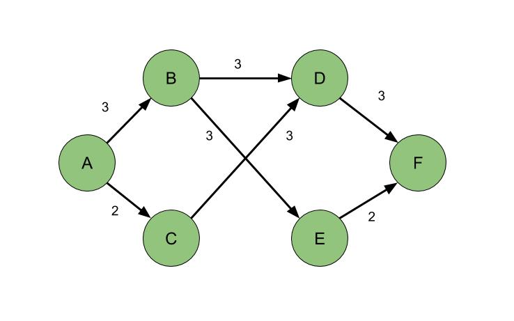

Max flow, minimum cut
在微软苏州已经入职了一个月了，生活开始渐渐稳定下来。和在北京的各种不堪相比，我要感谢这次调职，得以让我从 easy 模式开始社畜生活。同时搁置好久的算法又可以得以继续研究下去了。
今天讲的算法是最大流最小割算法。实际上这个是我在《算法导论》上看来看去都看不明白的一个章节：术语太多，而且代码很少（我好菜啊）。幸运的是，hihoCoder 上面的一系列专题为我垫了不少砖头，让我得以掌握这一块知识。
对于一个最大流问题，其定义一般都是这样的：有一个有向图 G，源点为 s，汇点为 t，每条边都有其对应的流最大容量 c，源点 s 只有发出的流量，汇点 t 只有汇入的流量，求能从源点到汇点的最大可能流量。
那么，我先不想说证明过程，我直接给出结论：我们用一种反复查找的方法，试图在当前图 G 上找到一条从 s 到 t 的路径，其边上允许的流量非零。每次找到这一条路径之后，也就可以确定这条路径上的流量瓶颈，将路径上的边的可行流量减去这一流量瓶颈，在新图上进行下一次查找。我们一直持续这样的查找，直到无法从 s 到 t 走出一条流量瓶颈大于 0 的路径。这个算法叫做 Ford-Fulkerson 算法。这个查找方式可以使用 BFS 进行。
嘛，基本上就是这样。但是由于图中可能会存在反向边，对于我上面讲的这个情况，对于下面这种情况是不成立的：

如果我们用 BFS 找到了 A-B-D-F 这条可行路径，其瓶颈是 3，减去该瓶颈之后无法找到更新的路径。然而其最大流是 5：由 B 分出的流量有一份到 D，另外两份到 E，然后 A-C-D 有一个流量为 2 的路径。这时候，我们需要一个“残余网络”的概念帮助我们解决这个问题：每条边维护一条对应的反向边，其大小为当前在正向上面已经消耗掉的流量，而正向边的容量为当前正向剩余的可行流量。换句话说，正向边和反向边的存在，帮助我们维护了每条边还有多少剩余流量可用。如果有一条流量容量为 1 的边，其正向流量为 1000000，反向流量为 999999，这也是可行的！我们在残余网络上找到的一条可行路径，叫做增广路径。于是我上面描述的算法可以如下表达：
|
|
与最小割的关系
我们通常说 max flow, minimun cut。那么什么被定义为 cut？在一个带有 s 和 t 的网络流里，有一种划分把点划分到两个不相交的 S 和 T 集合中，$s \in S, t \in T$. 净流 f(S, T) 被定义为穿过割 (S, T) 的流量之和（当一个割经过反向边的时候，反向边上的流量应为负值）。割的容量 C(S, T) 被定义为这条割上所有的容量之和（不包括反向边）。也就是说，$f(S, T) \le C(S, T)$。 可以证明，当前网络的流量总是等于任意一个割的净流。但是，任意的割不会有相同的容量。其中最小的那个割的容量对应的割，我们称之为最小割。
现在有一个结论：对于任意网络流图来说，最大流一定等于最小割的容量。这个结论是最大流最小割定理的直接推论，这个定理由三个等价的表达组成：
- f 是网络的最大流；
- 该网络的残余网络不包含任何增广路径。
- 流网络的某个切割 (S, T) 的容量等于 f。
因此，求出了最大流，也就求出了最小割的最大容量。使用上文所提及的 Ford-Fulkerson 算法，能够快速算出割、网络流量。
Production Code
使用 BFS 进行每次增广路径查找的 Ford-Fulkerson 实现叫做 Edmonds-Karp 算法。由于 BFS 时间复杂度（约）为 O(E)，流量递增操作的总次数为 O(VE)，该算法的时间复杂度为 $O(VE^2)$。这并不是最快的算法。现在有一种算法，通过记录每个点到汇点 t 的最短距离维持搜索顺序，使用 DFS 的方法进行增广路径的查找，能大大降低时间复杂度。这一算法的代码如下：
|
|
嘛，这个优化后的算法叫什么我也不知道，我只是从别人的解法里学习过来的。但是这个代码做了至少这么几个工作：
- 在进行 DFS 寻找增广路径之前用 BFS 从汇点搜索建立 dep 和 depcnt，即到汇点的最短距离，这样为在 DFS 的时候总是走最短路径提供了依据。
- 正向边和反向边成对存储，索引为偶数的总是正向边；正向边和反向边可以通过索引的异或切换；
- stack 里面存储通过 DFS 寻找的增广路径。
- 在每一次 DFS 寻找过后，回溯到瓶颈路径的起点重新搜索，节省时间；
- 维护一个 cur，其在物理意义上与 head 相同，也是为了直接从当前的可行边搜索，节省时间；
- 但是如果从某点找不到可行边，需要更新该点的 dep 与 depcnt。这也就意味着 cur 也要更新。
就是这样！但是有的文献指出，第一步建立 dep 与 depcnt 可以不进行。这主要的实现参考 http://hihocoder.com/contest/hiho117/solution/898175。
主要参考文献：
- hihocoder hiho一下 115、116、117、118、119 周
- 《算法导论》（第三版）第 26 章
- Max Flow-SAP-Improved Shortest Augmenting